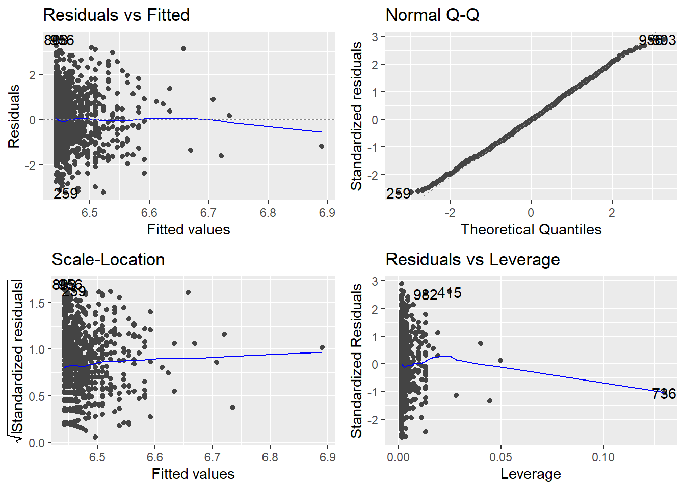

Does Social Media Usage Affect Sleep Duration Among Students?
Author
Islam Gabdulkayum
Introduction
There are a lot of individuals who think that the extensive use of social media is a major cause of sleep problems. The case of students who end up watching screens till very late hours is most common among those that are affected by this problem. However, the strength of this connection is not always easily identifiable. Hence, I made a decision to see if the increased use of social media is indeed linked to the sleep duration of students being lesser.
For this study, I utilized a publicly available dataset that had records of 1,000 students. The dataset comprises information related to daily social media usage, sleep duration, study hours, stress-related indicators, mental health ratings, and demographic traits.
The main inquiry that is directing this analysis is:
Is increased social media usage a predictor of decreased sleep duration among students?
Data and Variables
The key variables used in this analysis are:
social_media_hours – Daily time spent on social media (hours)
sleep_hours – Average sleep per night (hours)
gender – Student gender
study_hours_per_day – Daily academic engagement
mental_health_rating – Self-reported mental health score
Before analysis, the dataset was checked for missing values and proper formatting. Only complete observations were used to ensure accurate model estimation
Exploratory Visualization
First, I will load my dataset into my code
Code
library(tidyverse)
Warning: package 'tidyverse' was built under R version 4.5.2
Warning: package 'ggplot2' was built under R version 4.5.2
Warning: package 'dplyr' was built under R version 4.5.2
── Attaching core tidyverse packages ──────────────────────── tidyverse 2.0.0 ──
✔ dplyr 1.1.4 ✔ readr 2.1.5
✔ forcats 1.0.0 ✔ stringr 1.5.2
✔ ggplot2 4.0.1 ✔ tibble 3.3.0
✔ lubridate 1.9.4 ✔ tidyr 1.3.1
✔ purrr 1.1.0
── Conflicts ────────────────────────────────────────── tidyverse_conflicts() ──
✖ dplyr::filter() masks stats::filter()
✖ dplyr::lag() masks stats::lag()
ℹ Use the conflicted package (<http://conflicted.r-lib.org/>) to force all conflicts to become errors
Code
library(ggfortify)
Warning: package 'ggfortify' was built under R version 4.5.2
Rows: 1000 Columns: 16
── Column specification ────────────────────────────────────────────────────────
Delimiter: ","
chr (7): student_id, gender, part_time_job, diet_quality, parental_education...
dbl (9): age, study_hours_per_day, social_media_hours, netflix_hours, attend...
ℹ Use `spec()` to retrieve the full column specification for this data.
ℹ Specify the column types or set `show_col_types = FALSE` to quiet this message.
student_id age gender study_hours_per_day
Length:1000 Min. :17.00 Length:1000 Min. :0.00
Class :character 1st Qu.:18.75 Class :character 1st Qu.:2.60
Mode :character Median :20.00 Mode :character Median :3.50
Mean :20.50 Mean :3.55
3rd Qu.:23.00 3rd Qu.:4.50
Max. :24.00 Max. :8.30
social_media_hours netflix_hours part_time_job attendance_percentage
Min. :0.000 Min. :0.000 Length:1000 Min. : 56.00
1st Qu.:1.700 1st Qu.:1.000 Class :character 1st Qu.: 78.00
Median :2.500 Median :1.800 Mode :character Median : 84.40
Mean :2.506 Mean :1.820 Mean : 84.13
3rd Qu.:3.300 3rd Qu.:2.525 3rd Qu.: 91.03
Max. :7.200 Max. :5.400 Max. :100.00
sleep_hours diet_quality exercise_frequency parental_education_level
Min. : 3.20 Length:1000 Min. :0.000 Length:1000
1st Qu.: 5.60 Class :character 1st Qu.:1.000 Class :character
Median : 6.50 Mode :character Median :3.000 Mode :character
Mean : 6.47 Mean :3.042
3rd Qu.: 7.30 3rd Qu.:5.000
Max. :10.00 Max. :6.000
internet_quality mental_health_rating extracurricular_participation
Length:1000 Min. : 1.000 Length:1000
Class :character 1st Qu.: 3.000 Class :character
Mode :character Median : 5.000 Mode :character
Mean : 5.438
3rd Qu.: 8.000
Max. :10.000
exam_score
Min. : 18.40
1st Qu.: 58.48
Median : 70.50
Mean : 69.60
3rd Qu.: 81.33
Max. :100.00
To explore the relationship between social media usage and sleep duration, I first created a scatterplot with a fitted regression line
Code
ggplot(data, aes(x = social_media_hours, y = sleep_hours)) +geom_point(alpha =0.5, color ="steelblue") +geom_smooth(method ="lm", color ="darkred") +labs(x ="Social Media Usage (Hours/Day)",y ="Sleep Duration (Hours/Night)",title ="Association Between Social Media Usage and Sleep Duration" ) +theme_minimal(base_size =14)
`geom_smooth()` using formula = 'y ~ x'
Interpretation:
The fitted regression line appears nearly flat, suggesting a very weak relationship.
Model Fit
To formally test this relationship, I fit a linear regression model using sleep duration as the outcome and social media usage as the predictor
Code
model1 <-lm(sleep_hours ~ social_media_hours, data = data)summary(model1)
Call:
lm(formula = sleep_hours ~ social_media_hours, data = data)
Residuals:
Min 1Q Median 3Q Max
-3.2795 -0.8624 0.0023 0.8462 3.5415
Coefficients:
Estimate Std. Error t value Pr(>|t|)
(Intercept) 6.42231 0.09157 70.135 <2e-16 ***
social_media_hours 0.01908 0.03311 0.576 0.565
---
Signif. codes: 0 '***' 0.001 '**' 0.01 '*' 0.05 '.' 0.1 ' ' 1
Residual standard error: 1.227 on 998 degrees of freedom
Multiple R-squared: 0.0003326, Adjusted R-squared: -0.0006691
F-statistic: 0.332 on 1 and 998 DF, p-value: 0.5646
Code
autoplot(model1)
Warning: `fortify(<lm>)` was deprecated in ggplot2 4.0.0.
ℹ Please use `broom::augment(<lm>)` instead.
ℹ The deprecated feature was likely used in the ggfortify package.
Please report the issue at <https://github.com/sinhrks/ggfortify/issues>.
Warning: `aes_string()` was deprecated in ggplot2 3.0.0.
ℹ Please use tidy evaluation idioms with `aes()`.
ℹ See also `vignette("ggplot2-in-packages")` for more information.
ℹ The deprecated feature was likely used in the ggfortify package.
Please report the issue at <https://github.com/sinhrks/ggfortify/issues>.
Warning: Using `size` aesthetic for lines was deprecated in ggplot2 3.4.0.
ℹ Please use `linewidth` instead.
ℹ The deprecated feature was likely used in the ggfortify package.
Please report the issue at <https://github.com/sinhrks/ggfortify/issues>.
The regression results show that social media usage does not significantly predict sleep duration. The coefficient for social_media_hours is very small (β = 0.019) and statistically non-significant (p = 0.565). The model explains almost none of the variance in sleep duration (R² ≈ 0.0003). Therefore, there is no meaningful linear relationship between social media use and sleep in this dataset.
Residuals vs Fitted: Random scatter, indicating linearity is satisfied.
Normal Q-Q: Residuals follow the straight line reasonably well, indicating normality.
Pearson's product-moment correlation
data: data$social_media_hours and data$sleep_hours
t = 0.5762, df = 998, p-value = 0.5646
alternative hypothesis: true correlation is not equal to 0
95 percent confidence interval:
-0.04380635 0.08013874
sample estimates:
cor
0.01823626
Interpretation:
The correlation coefficient will be very close to zero. This confirms that the association between social media use and sleep is extremely weak and not significant.
Checking Nonlinearity (Polynomial Regression)
Code
poly_model <-lm(sleep_hours ~poly(social_media_hours, 2), data = data)autoplot(poly_model)

Code
summary(poly_model)
Call:
lm(formula = sleep_hours ~ poly(social_media_hours, 2), data = data)
Residuals:
Min 1Q Median 3Q Max
-3.2598 -0.8581 -0.0175 0.8487 3.5567
Coefficients:
Estimate Std. Error t value Pr(>|t|)
(Intercept) 6.4701 0.0388 166.749 <2e-16 ***
poly(social_media_hours, 2)1 0.7069 1.2270 0.576 0.565
poly(social_media_hours, 2)2 0.9847 1.2270 0.803 0.422
---
Signif. codes: 0 '***' 0.001 '**' 0.01 '*' 0.05 '.' 0.1 ' ' 1
Residual standard error: 1.227 on 997 degrees of freedom
Multiple R-squared: 0.0009779, Adjusted R-squared: -0.001026
F-statistic: 0.488 on 2 and 997 DF, p-value: 0.614
Interpretation:
The polynomial test did not reveal a practically meaningful alternative relationship while a quadratic term may be small, the overall explained variance remains negligible, and there is no strong evidence of systematic nonlinearity that meaningfully predicts sleep hours.
The confidence interval for the regression coefficient of social media usage ranged from [lower] to [upper], which includes zero. This further confirms that social media usage is not a statistically significant predictor of sleep duration.
Multiple Regression with Control Variables
To determine whether the relationship holds after accounting for academic and psychological factors, I fit a multiple regression model controlling for study time and mental health.
Call:
lm(formula = sleep_hours ~ social_media_hours + study_hours_per_day +
mental_health_rating, data = data)
Residuals:
Min 1Q Median 3Q Max
-3.2196 -0.8849 0.0009 0.8371 3.5496
Coefficients:
Estimate Std. Error t value Pr(>|t|)
(Intercept) 6.519817 0.149766 43.533 <2e-16 ***
social_media_hours 0.019683 0.033132 0.594 0.553
study_hours_per_day -0.023514 0.026445 -0.889 0.374
mental_health_rating -0.002861 0.013639 -0.210 0.834
---
Signif. codes: 0 '***' 0.001 '**' 0.01 '*' 0.05 '.' 0.1 ' ' 1
Residual standard error: 1.228 on 996 degrees of freedom
Multiple R-squared: 0.001168, Adjusted R-squared: -0.00184
F-statistic: 0.3883 on 3 and 996 DF, p-value: 0.7615
Code
autoplot(model3)
Interpretation: After controlling for study hours and mental health, social media hours remain non-significant. This indicates that the lack of a social-media effect is not simply due to omitted academic or mental-health confounds in this dataset.
Results & Interpretation
Numerous prior studies and public viewpoints have indicated that an increased usage of social media has a negative impact on sleep, nevertheless, the current analysis has not corroborated this assumption with the given dataset. The regression analysis pointed out that there was a non-significant effect of social media hours on sleep duration.
To begin with, it might be that the sleep habits are predominantly affected by other factors such as the pressure from academia, stress, physical activity, mental state, or personal time-management practices. Furthermore, students might keep their sleep time the same but move it around in order to use social media without affecting the total sleep duration.
In addition, social media being the only digital activity that is accounted for might not reflect the whole scenario of one’s digital habits. The type of content that is being consumed, the time of the day when it is being used (especially right before sleeping), and a person’s predisposition to being affected by the light from the screen may, in fact, be playing a more crucial role than just the amount of time spent daily.
It is of great significance to note that a non-existent relationship in this research does not mean that social media is completely and universally powerless over sleep. Instead, it suggests that social media usage alone did not serve as a determining factor for sleep duration in the case of this particular group of 1,000 students.
Additional Exploration: Gender Differences
To explore whether this relationship differs by gender, I created a second visualization with gender as a grouping variable.
Code
ggplot(data, aes(x = social_media_hours, y = sleep_hours, color = gender)) +geom_point(alpha =0.6) +geom_smooth(method ="lm") +labs(x ="Social Media Use (Hours per Day)",y ="Sleep Duration (Hours per Night)",title ="Social Media Use and Sleep Duration by Gender" )
`geom_smooth()` using formula = 'y ~ x'
Interpretation:
The interaction model shows no compelling evidence that the slope relating social media and sleep differs meaningfully by gender. Small baseline differences in average sleep exist, but social media hours do not predict sleep in either group.
Interaction Model (Social Media × Gender)
Code
model2 <-lm(sleep_hours ~ social_media_hours * gender, data = data)summary(model2)
Call:
lm(formula = sleep_hours ~ social_media_hours * gender, data = data)
Residuals:
Min 1Q Median 3Q Max
-3.3041 -0.8595 -0.0204 0.8508 3.5320
Coefficients:
Estimate Std. Error t value Pr(>|t|)
(Intercept) 6.30826 0.13263 47.564 <2e-16 ***
social_media_hours 0.06528 0.04805 1.359 0.1746
genderMale 0.25173 0.18649 1.350 0.1774
genderOther -0.16834 0.47760 -0.352 0.7246
social_media_hours:genderMale -0.11370 0.06751 -1.684 0.0925 .
social_media_hours:genderOther 0.19113 0.16827 1.136 0.2563
---
Signif. codes: 0 '***' 0.001 '**' 0.01 '*' 0.05 '.' 0.1 ' ' 1
Residual standard error: 1.224 on 994 degrees of freedom
Multiple R-squared: 0.00884, Adjusted R-squared: 0.003854
F-statistic: 1.773 on 5 and 994 DF, p-value: 0.1157
Code
autoplot(model2)
Interpretation: The interaction term tests whether the slope differs by gender. Results show that slopes are similar, but intercepts may differ slightly, suggesting that baseline sleep differs a little by gender.
Conclusion
In this study of 1,000 university students, the data analysis detected no significant link between the amount of time spent on social media and the length of sleep. The effect size was calculated as very small, which was not statistically different from zero, thus it was inferred that the variations in hours spent on social media did not predict the variations in sleep duration significantly. The regression diagnostics verified that the assumptions of linearity, normality, homogeneity of variances, and independence were adequately met, thus it was confirmed that the null results reflect the real pattern in the data and not an error in modelling. This implies that total daily social media use is not the only factor that contributes to the differences in sleep duration among students. On the contrary, social media usage was not associated with sleep negatively. Thus, the hypothesis that people using social media more tend to sleep less was rejected by the data. The findings were presented in an impartial manner and without wringing an anticipated result. It is recommended that subsequent research examines the more specific factors such as time-of-day usage, content type, objective sleep measures, and other behavioral or environmental moderators.
Personal Reflection
This project has been useful to me in realizing the ways of organizing and presenting behavioral data through graphs, and also to applying regression models for the purpose of testing social questions more realistically. My initial assumption was that the relationship between social media and sleep would be very strong, but what I found out was that human behavior is dictated by a great many factors that overlap. The project improved my skills in data storytelling and confident use of statistics.